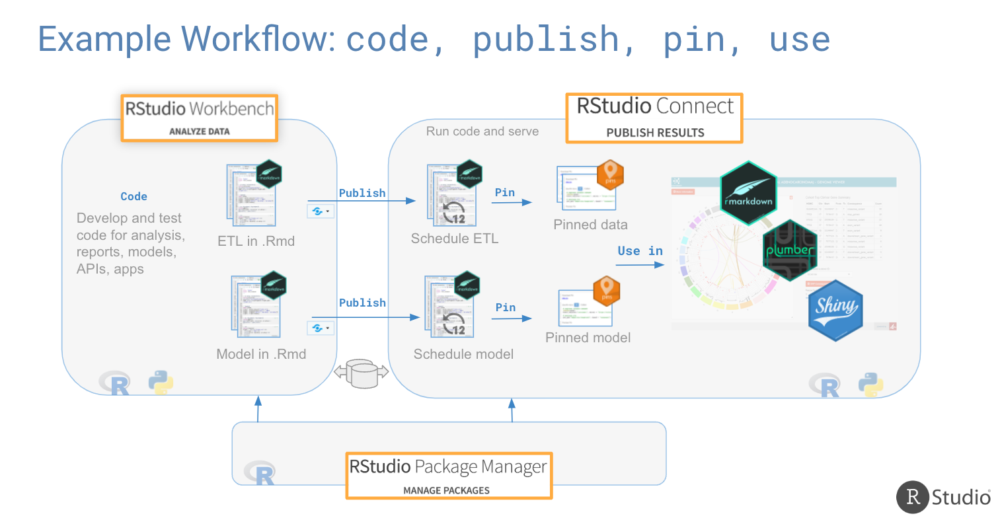

from pins import board_temp
from pins.data import mtcars
tmpboard = board_temp()
tmpboard<pins.boards.BaseBoard at 0x1263097c0>
The pins package publishes data, models, and other Python objects, making it easy to share them across projects and with your colleagues.
pip install pins
The pins package helps you publish data sets, models, and other R objects, making it easy to share them across projects and with your colleagues. The pin board can be on
Pins includes 2 major concepts: a board and a pinned object.
from pins import board_temp
from pins.data import mtcars
tmpboard = board_temp()
tmpboard<pins.boards.BaseBoard at 0x1263097c0>tmpboard.pin_write(mtcars.head(), "mtcars", type="csv")Writing pin:
Name: 'mtcars'
Version: 20230710T164815Z-120a5Meta(title='mtcars: a pinned 5 x 11 DataFrame', description=None, created='20230710T164815Z', pin_hash='120a54f7e0818041', file='mtcars.csv', file_size=249, type='csv', api_version=1, version=Version(created=datetime.datetime(2023, 7, 10, 16, 48, 15, 990642), hash='120a54f7e0818041'), tags=None, name='mtcars', user={}, local={})tmpboard.pin_read("mtcars")| mpg | cyl | disp | hp | drat | wt | qsec | vs | am | gear | carb | |
|---|---|---|---|---|---|---|---|---|---|---|---|
| 0 | 21.0 | 6 | 160.0 | 110 | 3.90 | 2.620 | 16.46 | 0 | 1 | 4 | 4 |
| 1 | 21.0 | 6 | 160.0 | 110 | 3.90 | 2.875 | 17.02 | 0 | 1 | 4 | 4 |
| 2 | 22.8 | 4 | 108.0 | 93 | 3.85 | 2.320 | 18.61 | 1 | 1 | 4 | 1 |
| 3 | 21.4 | 6 | 258.0 | 110 | 3.08 | 3.215 | 19.44 | 1 | 0 | 3 | 1 |
| 4 | 18.7 | 8 | 360.0 | 175 | 3.15 | 3.440 | 17.02 | 0 | 0 | 3 | 2 |
But, you can make pins more powerful with metadata.
tmpboard.pin_meta("mtcars")Meta(title='mtcars: a pinned 5 x 11 DataFrame', description=None, created='20230710T164815Z', pin_hash='120a54f7e0818041', file='mtcars.csv', file_size=249, type='csv', api_version=1, version=Version(created=datetime.datetime(2023, 7, 10, 16, 48, 15), hash='120a5'), tags=None, name='mtcars', user={}, local={})tmpboard.pin_write(
mtcars,
name="mtcars2",
type="csv",
description = "Data extracted from the 1974 Motor Trend US magazine, and comprises fuel consumption and 10 aspects of automobile design and performance for 32 automobiles (1973–74 models).",
metadata = {
"source": "Henderson and Velleman (1981), Building multiple regression models interactively. Biometrics, 37, 391–411."
}
)Writing pin:
Name: 'mtcars2'
Version: 20230710T164824Z-3b134Meta(title='mtcars2: a pinned 32 x 11 DataFrame', description='Data extracted from the 1974 Motor Trend US magazine, and comprises fuel consumption and 10 aspects of automobile design and performance for 32 automobiles (1973–74 models).', created='20230710T164824Z', pin_hash='3b134bae183b50c9', file='mtcars2.csv', file_size=1333, type='csv', api_version=1, version=Version(created=datetime.datetime(2023, 7, 10, 16, 48, 24, 131030), hash='3b134bae183b50c9'), tags=None, name='mtcars2', user={'source': 'Henderson and Velleman (1981), Building multiple regression models interactively. Biometrics, 37, 391–411.'}, local={})Pins can also be used to version objects.
board2 = board_temp()
board2.pin_write([1,2,3,4,5], name = "x", type = "json")
board2.pin_write([1,2,3], name = "x", type = "json")
board2.pin_write([1,2], name = "x", type = "json")
board2.pin_versions("x")Writing pin:
Name: 'x'
Version: 20230710T164243Z-2bc5d
Writing pin:
Name: 'x'
Version: 20230710T164243Z-c24c0
Writing pin:
Name: 'x'
Version: 20230710T164243Z-91d9a| created | hash | version | |
|---|---|---|---|
| 0 | 2023-07-10 16:42:43 | 2bc5d | 20230710T164243Z-2bc5d |
| 1 | 2023-07-10 16:42:43 | 91d9a | 20230710T164243Z-91d9a |
| 2 | 2023-07-10 16:42:43 | c24c0 | 20230710T164243Z-c24c0 |
board2.pin_read('x', version='___')[1, 2, 3]You can bring pins to many platforms with different boards.
import os
from dotenv import load_dotenv
load_dotenv()
api_key = os.getenv("CO_API_KEY")
rsc_url = os.getenv("CO_RSC_URL")from pins import board_connect
board = board_connect(server_url=rsc_url, api_key=api_key) # board_s3, board_gcs
board.pin_write(mtcars, "isabel.zimmerman/mtcars", type = "csv")Writing pin:
Name: 'isabel.zimmerman/mtcars'
Version: 20230710T164835Z-3b134Meta(title='mtcars: a pinned 32 x 11 DataFrame', description=None, created='20230710T164835Z', pin_hash='3b134bae183b50c9', file='mtcars.csv', file_size=1333, type='csv', api_version=1, version=VersionRaw(version='77094'), tags=None, name='isabel.zimmerman/mtcars', user={}, local={})You can see this pin now in the Connect UI.
This allows for easy collaboration with R users!
board.pin_read('isabel.zimmerman/ten_numbers')| x | |
|---|---|
| 0 | 1 |
| 1 | 2 |
| 2 | 3 |
| 3 | 4 |
| 4 | 5 |
| 5 | 6 |
| 6 | 7 |
| 7 | 8 |
| 8 | 9 |
| 9 | 10 |
vetiver, another package in the pins ecosystem, can help with model versioning tasks.
from pins import board_temp
from vetiver import vetiver_pin_write
from vetiver.data import mtcars
from vetiver import VetiverModel
from sklearn import linear_model
X = mtcars.drop(columns="mpg")
y = mtcars["mpg"]
car_mod = linear_model.LinearRegression().fit(X, y)
v = VetiverModel(car_mod, model_name = "cars_mpg",
prototype_data = X)
model_board = board_temp(allow_pickle_read = True)
vetiver_pin_write(model_board, v)This package provides a CLI (command-line interface) for interacting with and deploying to Posit Connect.
pip install rsconnect-python
You are able to publish static content as well as API endpoints and web applications.
This is generally done through the CLI tool, rsconnect-python.
You’ll need
.py, .qmd or .ipynb file to deployrequirements.txt file, optionallyrsconnect deploy notebook \
--server https://connect.example.org \
--api-key my-api-key \
my-notebook.ipynbor api, bokeh, dash, fastapi, html, etc..
If you are always deploying to the same server, you can use the add command to store this information.
rsconnect add \
--api-key my-api-key \
--server https://connect.example.org \
--name myserverThen you can reference the server by name in your command.
rsconnect deploy notebook --name myserver my-notebook.ipynbWith published content, you can schedule runs, interact with your APIs, and pull down data.